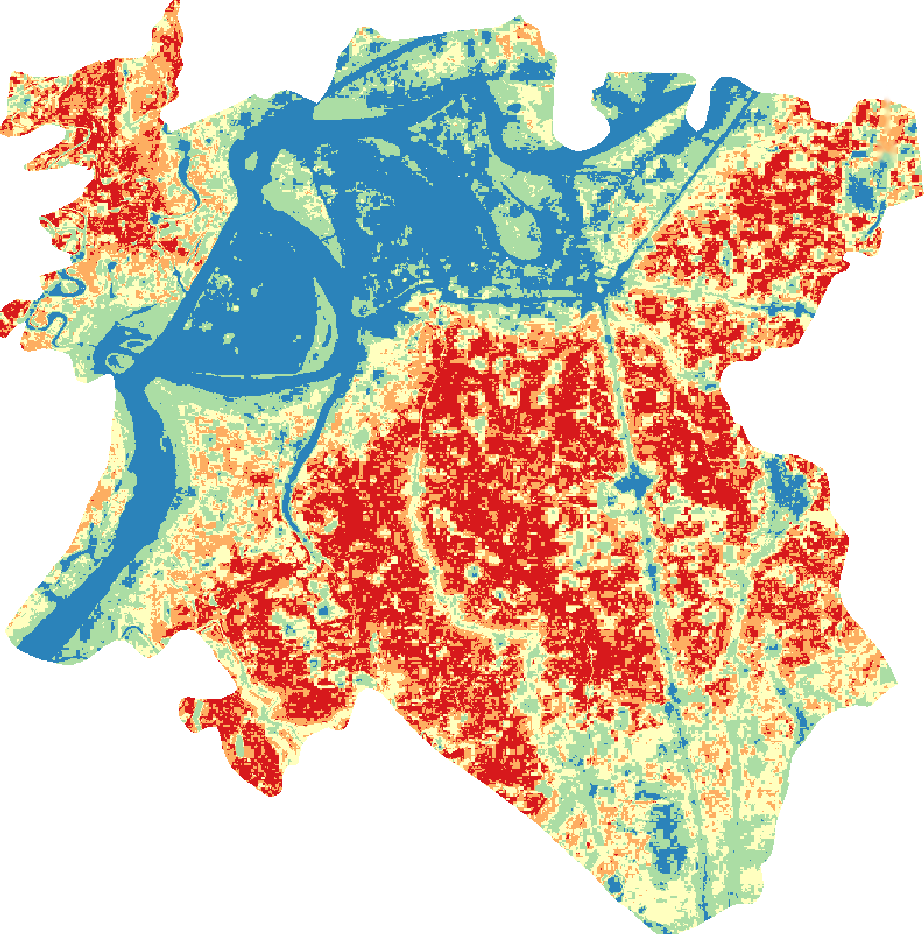

Mominul IslamHome
Mominul IslamHome
About
MS student in Geography and Environment (expected December 2026) at Shahjalal University of Science and Technology, specializing in GIS, remote sensing and explainable machine learning for hydroclimatic and multi-hazard risk assessment. Author of 8 published peer-reviewed articles and co-author on 17 additional manuscripts under review at journals including Springer Nature and Taylor & Francis. Combines hands-on hydrological and hydraulic modelling experience (MIKE suite, HEC-RAS) with a strong, active publication record. Seeking a PhD to advance research on compound climate risk, flood modelling and machine-learning-based hazard assessment.
Currently working as a GIS Analyst (Water Modelling) at SPEKTER GmbH, Herzogenaurach, Germany. My work has a spatial model at the centre and a plain question behind it: who is exposed, and why.
Research Area
- AI and Machine Learning for Geospatial Analysis
- GIS and Remote Sensing
- Watershed Digital Twins
- Climate Risk and Vulnerability Assessment
- Hydrological Modelling and Flood Risk Management
- Hydroclimatic Extremes
- Earth Observation
Goal
- To develop innovative, data-driven approaches that connect geospatial science, hydrology, AI, and climate research to better understand environmental risks.
- To translate research into practical solutions for resilient communities, sustainable water systems, and climate-informed decision-making.
Education
Research project: What Shapes Earthquake Risk in Bangladesh? Geospatial Insights from Physical and Social Factors Using a Spatial Meta-Regression Approach
Work Experience
Support hydrological and hydraulic modelling and GIS-based spatial analysis with SMS and the MIKE suite for water-infrastructure and flood-risk projects.
- GIS and remote sensing data processing and geospatial and statistical analysis (ArcGIS Pro, QGIS, Google Earth Engine) supporting departmental research on flood, earthquake and climate-risk assessment.
- Applied machine learning and explainable AI methods (Random Forest, XGBoost) to hazard susceptibility mapping and risk modelling.
- Co-authored and contributed to peer-reviewed manuscripts, including Q1 outlets (see Publications).
Skills
- GIS and remote sensing
- ArcGIS ProArcMapQGISGoogle Earth EngineEarth ObservationGeospatial and statistical analysis
- Hydrological and hydraulic modelling
- SWAT+Hydrological process analysisWatershed digital twinMIKE ZeroMIKE FLOODMIKE 11MIKE 21MIKE+HEC-RASDelft3DHydroAS
- Hydroclimatic and EO analysis
- Streamflow modellingWater-balance analysisMODIS ETSMAP soil moistureERA5-LandCHIRPS
- Programming and data analysis
- RPythonExplainable AI (SHAP)Time-series analysisUncertainty analysisGoogle Earth Engine (JavaScript)
- Graphics and software
- Adobe IllustratorAdobe PhotoshopCivil 3DMicrosoft Office Suite
Languages English (fluent), Bengali (native)
Publications
Google Scholar profile · * corresponding author · Q = journal quartile where knownResearch articles published or accepted
2026
- 01
Flash flood susceptibility mapping in the northeastern haor basin of Bangladesh using tree-based ensemble models
Mostafa, Z. I. B., Islam, Md. M.*, Biswas, S., Kabir, Md. N., Hayakawa, Y. S., Ali, Md. Y., Islam, Md. A., & Terao, T.
Spatial Information ResearchAccepted 24 Sep 2026, DOI pending
- 02
What Shapes Earthquake Risk in Bangladesh? Geospatial Insights from Physical and Social Factors Using a Spatial Meta-Regression Approach
Islam, M., Kabir, M.
Earth Systems and Environment 10, 9111–9161Q1doi.org/10.1007/s41748-026-01089-4
- 03
A Review of Ecological Vulnerability in Bangladesh's Wetlands: Comparative Insights with Emphasis on Ratargul Swamp Forest
Siddika, T., Islam, Md. M., Azad, M. A. K., Kabir, M. N., Rahman, A., Kunda, M., Alam, A. K. M. R., & Islam, M. A.
Wetlands 46, 103doi.org/10.1007/s13157-026-02120-0
- 04
Why monthly earthquake forecasting fails in low-seismicity regions? Insights from zero-inflated seismic records and b-value analysis in Bangladesh
Kabir, M. N., Islam, M. A., Islam, Md. M.*, Afrose, T., Biswas, S., Barua, E., & Sayem, S. M. S.
Journal of Earth System Sciencedoi.org/10.1007/s12040-026-02965-3
- 05
Understanding morphological and hydrological changes in the Dhaleshwari River basin through remote sensing and GIS-based analysis
Mostan, N., Kabir, Md. N., Hasan, Md. M., Islam, Md. M., & Islam, Md. A.
International Journal of River Basin Management, 1–23Q1doi.org/10.1080/15715124.2025.2610998
- 06
Geospatial assessment of natural hazards risks in coastal Bangladesh: Focus on communities outside embankments in Barguna
Kabir, M. N., Islam, S., Sikder, M. B., Sayem, S. M. S., Barua, E., & Islam, Md. M.
Discover Geoscience 4, 405Q3doi.org/10.1007/s44288-026-00774-1
2025
- 07
Optimizing Artificial Rainwater Harvesting in the Northwest Zone of Bangladesh: Integrated Machine Learning and a GIS-Based Multicriteria Approach
Kabir, Md. N., Hasan, M. N., Hridi, T. T., Islam, Md. M., Barua, E., Mostan, N., & Sayem, S. M. S.
Water Conservation Science and Engineering 10(2), 56Q2doi.org/10.1007/s41101-025-00381-0
- 08
Geospatial assessment of climate driven migration in the southwest coastal region of Bangladesh
Kabir, M. N., Sikder, M. B., Islam, M. A., Barua, E., Islam, Md. M., & Hridi, T. T.
Discover Geoscience 3, 117Q3doi.org/10.1007/s44288-025-00227-1
Book chapter
- 09
Earthquake Preparedness and Awareness among the People of Sylhet City. In N. Islam & A. Paul (Eds.), Sylhet Metropolitan: A Geographical Survey
Kabir, M. N., Sikdar, M. B., Hasan, M., & Islam, M. M.
Centre for Urban Studies, DhakaBook chapter
Conference participation
- 10
A Meta-Approach to Refining Earthquake Risk Zones in Bangladesh from Geophysical and Socio-Economic Perspectives
Islam, Md. M.*, & Kabir, M. N.
1st International Conference on Geosciences for Sustainable Development Goals (ICGSDG), University of Rajshahi, BangladeshAbstract published
Manuscripts under review 17 manuscripts
- 01Islam, M. M.*, Ahmed, S., Nadim, M. M., Safa, N. R., Nayem, J., & Sani, M. S. S.. Spatial assessment of flood-induced eco-disaster vulnerability using ensemble machine learning in the Surma-Kushiyara Basin, Bangladesh. Discover Geoscience
- 02Islam, M. M.*, Kabir, M. N., Islam, M. A., Rupak, N. A., Prita, T. J., & Chowdhury, P.. Unraveling the spatiotemporal patterns of afternoon heat in Bangladesh: Insights from ERA5-Land reanalysis for the pre-monsoon period. Climate Change
- 03Islam, M. M., Ahmed, Z., Basak, R.. Assessing the Impact of Mining on Agricultural Livelihood Vulnerability and Household Food Insecurity in Bangladesh's Largest Coal Mine Area. Global Environmental Change
- 04Islam, M. M.*, Kabir, M. N., Islam, M. A., Hridi, T. T., & Mahi, N. U. M.. Artificial Intelligence in Geography: A Critical Review of Spatial Knowledge, Power, and Inequality. AI & SOCIETY
- 05Islam, M. M.*, Kabir, M. N., Islam, M. A.. How El Niño and La Niña Reshape Shared Warm-Dry Exposure Among Countries. Meteorology and Atmospheric Physics
- 06Kabir, M. N., Islam, M. A., Islam, Md. M.*, Hridi, T. T., Sakib, T. A., & Seum, A. B. A.. Spatiotemporal Seismic Hazard Assessment of Bangladesh Using Zero-Inflated and Regime-Based Probabilistic Models. Journal of GeoRisk (Taylor & Francis)
- 07Kabir, M. N., Islam, M. A., Islam, Md. M.*, Afrose, T., Any, M. K., Biswas, S.. Non-Stationary Seismic Regimes in Bangladesh Revealed by a Century-Long Earthquake Energy Record (1915–2025). Journal of Seismology
- 08Sikder, M. B., Kabir, M. H., Kabir, M. N., Islam, M. M., Hayakawa, Y. S., Sabbir, S. H., Biswas, S., Kazi, M. F., Rupok, N. A., & Sakib, T. A.. Analyzing the Impact of Climate Change on Internally Displaced Persons in the Central Coast of Bangladesh. Journal of Geographical Systems
- 09Islam, Md. Mohaimenul, Islam, Md. M., Islam, M. A., Kabir, M. N., & Tawsif, S.. Can Multi-Criteria Decision-Making-Based Flood Risk Assessment Reflect Community Response? Evidence from a Dynamic Floodplain in Bangladesh. Regional Environmental Change
- 10Bhuyan, M. M. H., Islam, M. A., Kabir, M. N., Islam, M. M., Barua, E., Terao, T., & Hayakawa, Y. S.. Geospatial Identification of Flood-Induced Migration Hotspots in Northeastern Bangladesh Using Deep Learning.
- 11Hridi, T. T., Kabir, Md. N., Islam, Md. M., Islam, Md. A., & Mahi, N.-U.-M.. Observation of Drought Patterns in Western Bangladesh through Satellite and Ground-Based Data: An Experimental Study (2014–2024). Discover Hazards (Springer Nature)
- 12Folik, F., Islam, Md. M., & Sani, S. S.. A Multi-Model Geospatial Framework for Assessing Urban Green Space, Surface Heat Dynamics, and Cooling Priorities in Sylhet City Corporation, Bangladesh. Sustainable Cities and Society
- 13Sharmin, S., Islam, M. M., Praca, E., Singh, S., & Avtar, R.. A geospatial assessment of climate-related displacement susceptibility in coastal Bangladesh. Discover Geoscience
- 14Sharmin, I., Islam, M. A., Islam, M. M., Kabir, M. N., Bhuyan, M. M. H., Rupak, N. A., & Chowdhury, P.. How does sediment organic carbon vary across seasons and depths in the Meghna Estuary? A field-based study on Nijhum Dwip Island, Bangladesh. Estuaries and Coasts
- 15Labib, M. I. H., Sani, M. S. S., Islam, M. M.*, Hasan, T., Kabir, M. N., Chowdhury, P., Rupak, N. A., & Islam, M. A.. Mapping relative irrigation-dependence priority in Bangladesh's Barind Tract using crop-activity-water-stress co-occurrence and explainable surrogate models. Discover Geoscience
- 16Sagor, J. H., Islam, M. A., Islam, M. M.*, Tawsif, S., & Kabir, M. N.. Integrating Coastal Dynamics, Ecosystem Service Value, and Ecotourism Suitability for Conservation-Oriented Planning on Sonadia Island, Bangladesh. Journal of Coastal Conservation
- 17Safayet, K. M., Nayeem, J., Islam, M. M.*. Urban Surface Heat Persistence and Environmental Predictors in Cumilla, Bangladesh. Spatial Information Research
Research Projects
- An Explainable AI-Enhanced Watershed Digital Twin for Streamflow Prediction under Hydroclimatic Extremes in the Transboundary Sari-Gowain Basin
- Seasonal Water Paradox and Compound Hydroclimatic Risk Regimes in Bangladesh's Teesta River Basin: A Remote Sensing and Explainable Machine Learning Assessment
- Hydroclimatic whiplash and cropland stress in the Sunamganj Haor, Bangladesh
- Deep Learning-Based Monthly Rainfall Forecasting Across Bangladesh Using CHIRPS Data: A CNN–LSTM Comparison
- Spatiotemporal Hydro-Environmental Controls on Vegetation Condition in Ratargul Swamp Forest: An Explainable Remote-Sensing and Machine-Learning Assessment
- Regional Frequency Analysis of Extreme Daily Rainfall in the Surma–Kushiyara Basin, Bangladesh: Quality Control, Model Evaluation, and Return-Level Estimation
- When Will Extreme Rainfall End? Explainable Prediction of Rainfall Persistence and Termination in the Northeastern Haor Region of Bangladesh
- Understanding Multi-Hazard Risks in a Changing Climate: A Review of Global Patterns, Drivers, and Impacts (2015–2025)
- Pre-Harvest Flood Risk and Vegetation Impacts on Boro Rice in Northeastern Bangladesh: A 25-Year Satellite Assessment
FloodML-Geo, a QGIS plugin
Flood susceptibility mapping inside QGIS with explainable machine learning. The flood raster goes in; spatially validated models, SHAP explanations and susceptibility maps come out. Includes a self-test and a check that flags test data overlapping the training data.

Gallery
Fieldwork, mapping sessions and research lifeLeadership, Training and Awards
Leadership
- General Secretary, YouthMappers at SUSTApr 2024 – present
- President, Tangail Students' Association, SUSTFeb 2024 – Mar 2025
- Asst. General Secretary, GEE Society, SUSTJul 2023 – Oct 2024
Courses and training
- R Programming for Data AnalyticsCognitive Solution Bangladesh Mar 2025
- GIS Analysis with GeoPandas (Python)GeoDelta Labs, online Feb 2025
- Programming with PythonEDGE IICT, SUST Dec 2024
- ArcGIS Pro for Regional PlanningGEE Society, SUST Jul 2024
Awards
- SUST Higher Education Fellowship/ScholarshipShahjalal University of Science and Technology 2026
- University Merit ScholarshipShahjalal University of Science and Technology Fall 2019 – Spring 2020
Contact
Find me online
Open to collaboration on GIS, hydrological modelling and climate risk research, and to PhD opportunities in flood modelling and machine-learning-based hazard assessment.